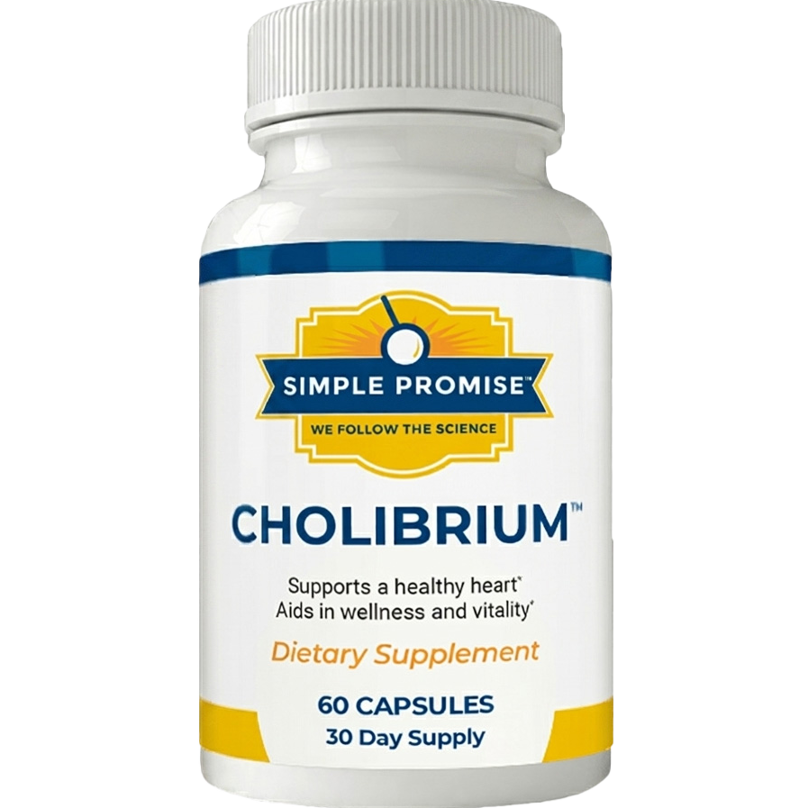

Why Caring for Cardiovascular Health Goes Far Beyond Diet?
Discover the everyday habits and natural approaches that may help support long-term cardiovascular wellness.

⭐⭐⭐⭐⭐
Support your heart health naturally with a formula designed to complement a healthy lifestyle and daily wellness routine.
View OfferAbout Cholibrium
Taking care of your heart health has become a growing concern for many people. Busy schedules, unhealthy eating habits, lack of exercise, and daily stress can make it difficult to maintain a healthy lifestyle over time.
The challenge is that making major lifestyle changes is not always easy. Even people who understand the importance of healthy eating and regular physical activity often struggle to stay consistent with their routines.
Because of this, many individuals are looking for ways to complement their daily wellness habits. The goal is not to replace healthy choices but to support them with additional tools that fit naturally into everyday life.
This is where Cholibrium has attracted attention.
Cholibrium is a natural dietary supplement formulated with carefully selected ingredients designed to support cardiovascular wellness as part of a healthy lifestyle. Its purpose is to complement positive daily habits and provide a convenient option for people who want to take a proactive approach to their health.
Rather than relying on drastic changes, the idea is simple: incorporate the supplement into your daily routine while continuing to focus on healthy habits.
Why Are More People Looking for Natural Solutions?
In recent years, interest in natural wellness products has increased significantly. Many people prefer products that can be used alongside balanced nutrition, regular exercise, and other healthy lifestyle practices.
Convenience is also an important factor. Not everyone has the time to prepare perfect meals or follow an ideal routine every day. As a result, supportive wellness products have become increasingly popular among individuals looking for practical ways to care for their health.
- ✔ Key Benefits
- ✔ Made with natural ingredients.
- ✔ Easy to incorporate into your daily routine.
- ✔ Designed to complement healthy lifestyle habits.
- ✔ Convenient for busy schedules.
- ✔ Supports long-term wellness goals.
- ✔ Simple and practical to use.
How Does Cholibrium Work?
The concept behind Cholibrium is straightforward. Instead of promising unrealistic results, the formula is designed to provide natural ingredients that can support your daily wellness efforts.
It works best when combined with positive lifestyle habits such as balanced nutrition, regular physical activity, proper hydration, and professional healthcare guidance when needed.
This approach makes sense because cardiovascular wellness is typically influenced by multiple factors over time rather than a single action or product.
Is It Worth Learning More?
Before trying any supplement, it is important to understand its ingredients, purpose, and the company's approach to quality.
Many people find it helpful to explore natural wellness options that can be easily added to their routine. After all, consistency is often one of the most important factors in maintaining long-term health and wellness goals.
🏷️🔥Special offer🔥🏷️
If you'd like to learn more about the ingredients, recommended use, and additional information provided by the manufacturer, you can visit the official website for complete details.
Access the official website.